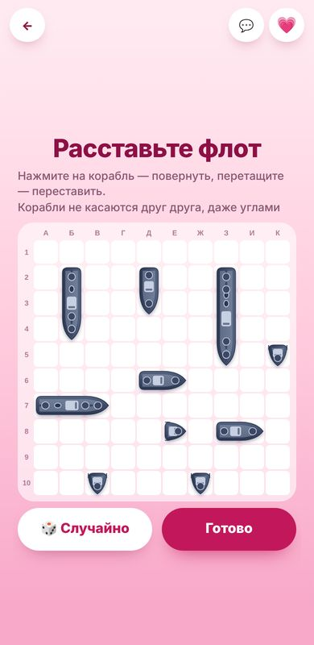
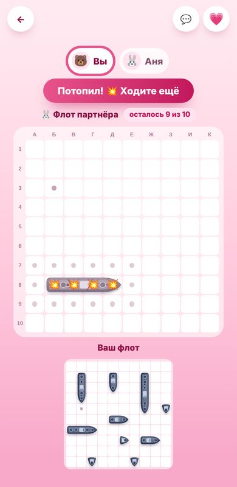

Морской бой онлайн вдвоём
Тот самый морской бой из школьной тетрадки, только каждый играет со своего телефона. Откройте игру, отправьте ссылку другу или партнёру, расставьте корабли и стреляйте по очереди. Регистрироваться и что-то устанавливать не нужно.
Откроется игра, там появится ссылка для партнёра
Как начать игру
- Нажмите «Играть в морской бой». Откроется игра, и для вас будет создана отдельная комната.
- Отправьте ссылку из игры другу в любой мессенджер: Telegram, WhatsApp, Viber, Instagram.
- Каждый расставляет свой флот. Когда оба готовы, начинается бой.

Правила морского боя
Играем по классическим правилам. Поле 10×10 клеток, столбцы подписаны буквами от А до К, строки цифрами от 1 до 10. У каждого игрока одинаковый флот из десяти кораблей:
- 1 четырёхпалубный корабль (4 клетки);
- 2 трёхпалубных (по 3 клетки);
- 3 двухпалубных (по 2 клетки);
- 4 однопалубных (по 1 клетке).
Корабли стоят прямо, по горизонтали или вертикали, и не касаются друг друга даже углами: между ними всегда остаётся хотя бы одна пустая клетка. Игра сама следит за этим правилом и не даст поставить корабль вплотную к другому.
Дальше игроки стреляют по очереди, выбирая клетку на поле соперника. Промах передаёт ход. Попадание даёт право выстрелить ещё раз. Когда все клетки корабля подбиты, он считается потопленным, а клетки вокруг него отмечаются автоматически: там кораблей быть не может, и стрелять туда бессмысленно. Побеждает тот, кто первым потопит весь флот соперника.
Чем удобна эта версия
- Каждый играет со своего телефона. Не нужно передавать один телефон и отворачиваться, пока соперник расставляет корабли.
- Быстрая расстановка. Кнопка «Случайно» за секунду расставляет флот по правилам. Корабль можно перетащить пальцем, а нажатием повернуть.
- Чат прямо в игре. Можно подколоть соперника после промаха или поздравить с удачным выстрелом, не переключаясь в мессенджер.
- Подсказки на поле. Видно последний выстрел соперника, сколько его кораблей осталось и чей сейчас ход.
- Реванш в одно касание. После победы кнопка «Играть ещё» начинает новую партию в той же комнате.

Как выигрывать чаще: несколько советов
- Не прижимайте все корабли к краям. Опытные игроки часто начинают поиск с краёв поля.
- Ищите большие корабли «по диагонали». Стреляйте в шахматном порядке с шагом в 3–4 клетки, так четырёхпалубник найдётся быстрее.
- После попадания проверьте соседние клетки по горизонтали и вертикали, чтобы понять, как стоит корабль.
- Однопалубники оставьте на конец. Их проще найти, когда большая часть поля уже открыта.
Для кого эта игра
Морской бой подходит для пар на расстоянии, друзей в разных городах, родителей и детей и для коллег на перерыве. Одна партия длится 10–15 минут, поэтому её удобно сыграть вечером во время видеозвонка или просто переписываясь. Если хочется чего-то спокойнее, загляните в вопросы для пары или общий холст для рисования.
Частые вопросы
Можно ли играть в морской бой вдвоём с разных телефонов?
Да. Один открывает игру и отправляет ссылку, второй переходит по ней. Каждый видит своё поле и поле соперника на своём телефоне.
Видит ли соперник мои корабли?
Нет. Соперник видит только свои выстрелы: промахи, попадания и потопленные корабли.
Можно ли ставить корабли рядом?
Нет, по классическим правилам корабли не касаются друг друга даже углами. Игра не даст поставить корабль вплотную.
Что будет после попадания?
Тот, кто попал, стреляет ещё раз. Ход переходит к сопернику только после промаха.
Нужно ли регистрироваться?
Нет. Достаточно открыть игру и отправить ссылку партнёру. Имя и аватар можно указать по желанию, а профиль сохранить через Google, если хотите находить друзей.
Работает ли на телефоне?
Да, игры сделаны в первую очередь для телефона. Они открываются в обычном браузере, ничего устанавливать не нужно.
Это бесплатно?
Да, играть можно бесплатно. На сайте может показываться реклама.
Откроется игра, там появится ссылка для партнёра